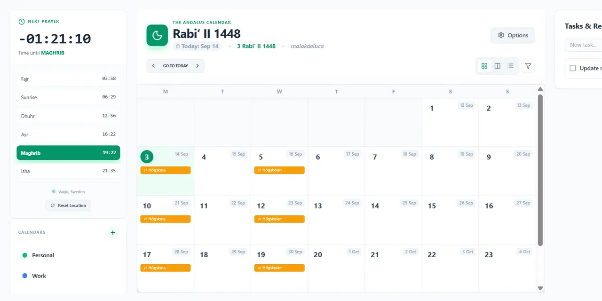

The Andalus Calendar
En kalender där bönetiden redan sitter i vyn, så du inte bokar över salah.
- År
- 2026
- Typ
- React · Firebase · Kalender
- Byggt med
- React · Firebase · Hostinger
Projekt · 17 st

En kalender där bönetiden redan sitter i vyn, så du inte bokar över salah.